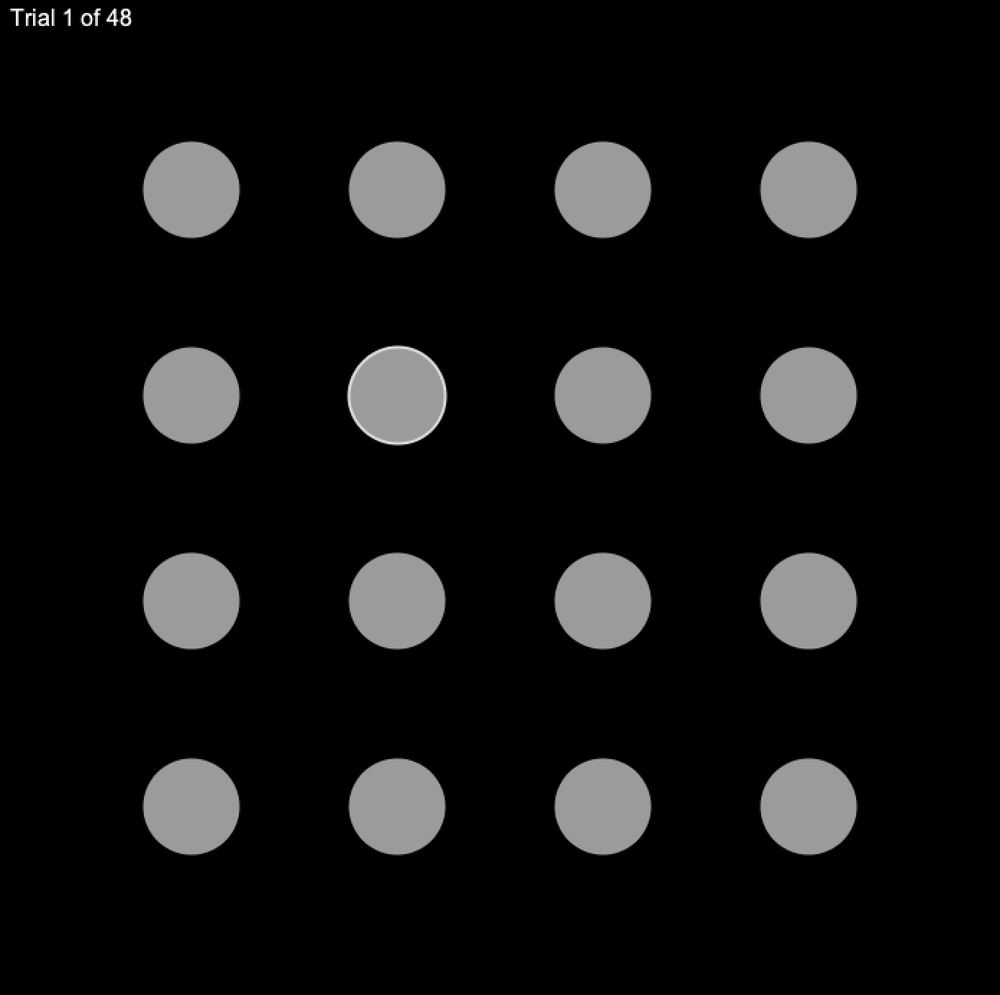

Bake-off #2 - Seleção de Alvos e Fatores Humanos
| Disponível: 12 de Abril de 2021 |
| Entrega: até dia 7 de Maio às 23h59 através do Fénix |
| Desafio: diminuir o tempo de seleção de alvos numa interface abstrata |
| Resultado esperado: interface funcional que minimize o tempo de seleção de alvos circulares numa grelha de 4 x 4 |
| Avaliação: 0-20 valores; 10 valores pelo processo de desenho, 10 valores pelo tempo de seleção médio dos alvos e respetiva taxa de sucesso |
O objetivo do segundo bake-off é diminuir o tempo de seleção de alvos numa interface abstrata. É disponibilizado um código-fonte em p5.js que:
Mostra uma grelha de 4x4 alvos aos vossos utilizadores (Figura 1);
Indica qual o alvo a selecionar;
Quantifica o desempenho do utilizador com base na taxa de sucesso (accuracy, 0-100%), tempo total da tarefa (segundos), tempo médio por alvo (segundos), e tempo médio por alvo com penalização se a taxa de sucesso do vosso utilizador foi inferior a 95% (segundos) -- Figura 2;
Guarda estas métricas de desempenho na plataforma Firebase.
Para vencerem este bake-off têm de alterar o código-fonte fornecido de maneira a que os vossos utilizadores selecionem os alvos o mais rapidamente possível (atenção à penalização por taxas de sucesso abaixo dos 95%).

Figura 1. Distribuição dos 16 alvos numa grelha de 4 x 4. Neste exemplo o alvo a selecionar é representado por uma borda branca.
Têm também de calcular e imprimir uma métrica adicional: o Fitts Index of Performance (índice de dificuldade, ID). Devem usar a fórmula proposta por Mackenzie: log2 (distância-ao-alvo desde a última seleção / largura-do-alvo + 1) -- ver aula teórica em “Fatores Humanos I” e o capítulo 2.1.4 (“O movimento”). Devem guardar cada ID na Firebase e opcionalmente imprimi-los no final da tarefa (Figura 2).
2. Funcionamento
O bake-off é um desafio de design em aberto. É crucial que iniciem um processo iterativo de geração e teste de ideias desde o primeiro dia. A vossa solução tem de obedecer às seguintes regras:
Podem aceder à lista de alvos a selecionar. No entanto, a dado momento só podem aceder ao alvo atual (i), o próximo alvo (i+1), e o alvo anterior (i-1)
Não podem existir alvos invisíveis ou impossíveis de selecionar. Garantam que os alvos são visíveis comparando a cor de preenchimento (fill) e a cor de fundo da vossa aplicação. Este Δ deve ser no mínimo 50: http://colormine.org/delta-e-calculator
Não podem alterar o tamanho visual ou da hitbox dos alvos (1.5cm), o distanciamento entre eles, nem o posicionamento da grelha de alvos (isto é, esta tem que estar no centro do ecrã)
Não podem fazer alterações ao comportamento do cursor que sejam dependentes do alvo a selecionar; isto é, alterações ao comportamento do cursor terão de ser uniformes para todos os alvos
Não podem usar hardware adicional para além de um rato convencional
Não podem modificar o código que calcula as métricas de desempenho descritas em C., nem o código referente à Firebase em D.

Figura 2. Exemplo do ecrã de resultados com o Index of Performance para cada alvo.
3. Recomendações
Confirmem com o docente do laboratório ou através do Discord (#bake-off-2) se não tiverem a certeza se uma das vossas decisões de desenho quebra alguma das regras descritas acima.
Lembrem-se, o vosso objetivo de desenho é minimizar o tempo de seleção. Vejam com atenção ambas as aulas sobre Fatores Humanos, e ambos os capítulos 2 (“Nós, os Humanos”) e 9.3 (“Avaliação preditiva”).
4. Recursos e Ferramentas
A vossa aplicação será desenvolvida através do p5.js, uma biblioteca JavaScript open-source para código criativo. Isto com base no código-base seguinte: https://editor.p5js.org/AugustoEst/sketches/maCvmB2XD
Para evitarmos problemas de acesso e hosting recomendamos o seguinte editor web: https://editor.p5js.org/. Dito isto, podem optar por fazer host da vossa aplicação em qualquer domínio (desde que seja acessível aos vossos participantes no dia do bake-off).
Learn: https://p5js.org/learn/
Referência da linguagem: https://p5js.org/reference/
Exemplos: https://p5js.org/examples/
Bibliotecas: https://p5js.org/libraries/
5. Competição
O bake-off termina com uma competição que será realizada na aula de laboratório da semana de 3 de Maio. Cada aluno irá testar todos os projetos do seu turno com a excepção do seu próprio projeto. Estes testes serão realizados de forma remota, mas terão que terminar dentro do período de aula.
É da responsabilidade de cada grupo preparar a solução e o link de acesso à aplicação p5.js. A ordem de execução dos projetos por cada aluno será aleatória e da responsabilidade do docente do laboratório. Aos alunos pede-se que não interajam com os autores dos projetos durante o bake-off, que concluam as tarefas sem distrações e com máximo de concentração possível, e que usem um computador com rato por uma questão de consistência e justiça dos resultados.
Comportamentos desonestos (menos éticos) resultam na desqualificação da competição (cotação de 0.0v). Tempos médios de seleção dois desvios padrões acima ou abaixo da média serão descartados. Alunos com 3 ou mais avaliações descartadas serão penalizados com 0.5v. A mesma penalização será aplicada a alunos que não completem todas as avaliações dentro do tempo de aula.
Reportem algum projeto que quebre as regras definidas “2. Funcionamento” ao docente do laboratório. Finalmente, usem o vosso nome (primeiro e último) e grupo no Zoom.
6. Submissão
A submissão tem de ser feita até dia 7 de Maio às 23h59 via Fenix. Apenas um membro do grupo terá que realizar esta entrega; um documento com o seguinte formato IPM2011132646L04_Grupo42.txt e contendo apenas dois links:
Link para a aplicação p5.js (File > Share > Edit)
Link para vídeo YouTube (Unlisted) com a descrição do processo de desenho e solução final (com captions ou voice-over). A captação de vídeo com o telemóvel é suficiente já que a avaliação não contempla a qualidade de gravação ou edição. Por outro lado, o vídeo deve conter:
Ideias iniciais: quais foram? Um descrição rápida ou demonstração de esboços/protótipos é suficiente;
Três iterações sobre a aplicação. Cada iteração deve descrever:
As novas ideias e o porquê destas (com base nos resultados da iteração anterior)
O número e descrição dos participantes (pelo menos cinco por iteração)
Os tempo médios com penalização
Solução final: demonstrem a solução final e expliquem as vossas opções de desenho finais;
O vídeo não deve ultrapassar os 3 minutos.
7. Avaliação
10.0v, Processo de Desenho: demonstrado através da submissão vídeo;
10.0v, Tempo médio de seleção de alvos (com penalização). Esta componente será calculada através dos resultados dos testes com utilizadores durante o bake-off. A métrica é calculada automaticamente pelo código-fonte fornecido e submetida para uma base de dados (Firebase). O tempo médio de seleção (com penalização) será associado à seguinte nota:
0.0: >= 0.835s
2.0v: ]0.767s ; 0.835s[
4.0v: ]0.699s ; 0.767s]
6.0v: ]0.631s ; 0.699s]
8.0v: ]0.563s ; 0.631s]
10.0v: <= 0.563s
1.0v, Utilizador mais rápido (bónus). O utilizador mais rápido de cada turno de laboratório receberá uma bonificação de 1.0v na nota final do bake-off (tempo médio de seleção com penalização).
-2.0v, Fitts Performance Index. Grupos que não calculem o Fitts Performance Index ou não os enviem para a nossa base de dados terão uma penalização de 2.0v. Erro neste cálculo acarreta uma penalização de 0.5v.
Caso não seja submetido o vídeo terão 0.0v nas primeiras duas componentes descritas acima (1. e 2.). Caso não submetam o projeto p5.js serão apenas avaliados na componente 1. (máximo 10.0v).
Grupos ou elementos que não compareçam na sessão de bake-off terão cotação de 0.0v na componente 2., com exceção de casos com falta justificada (por ex. declaração médica).
Finalmente, grupos que quebram as regras definidas acima em “2. Funcionamento” terão cotação de 0.0v na componente 2. (alterarem o tamanho dos alvos etc).